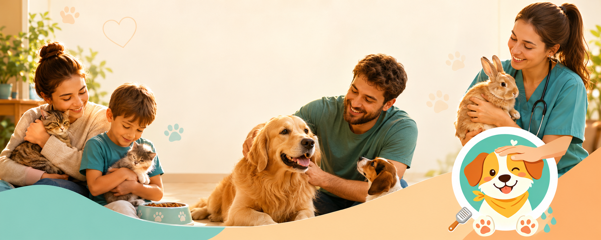
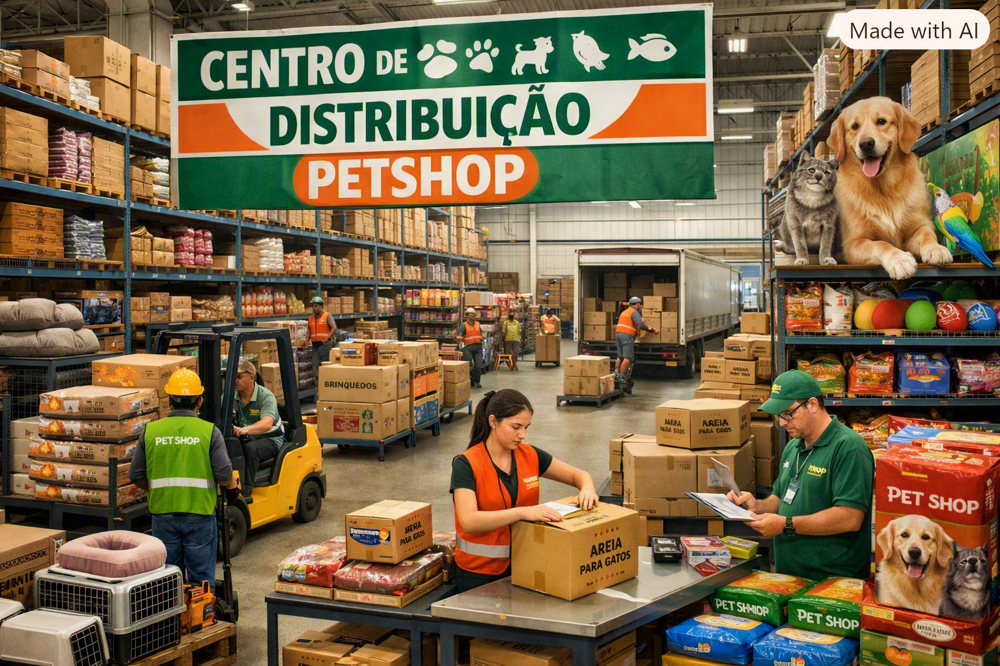

Sobre nós
Cuidado que chega mais perto.
A Focinho Feliz nasceu em 2015 com o sonho de oferecer cuidado de qualidade para cães e gatos em todo o Brasil.
Nosso centro de distribuição fica em Vila Velha, no Espírito Santo. De lá, saem os pedidos preparados com carinho para chegar rapidamente à sua casa.

Por que escolher a Focinho Feliz
Diferenciais
- Entrega em até 3 dias úteis para todo o Brasil
- Veterinários parceiros disponíveis para consulta online
- Programa de fidelidade com desconto em ração
- Frete grátis para compras acima de R$ 150